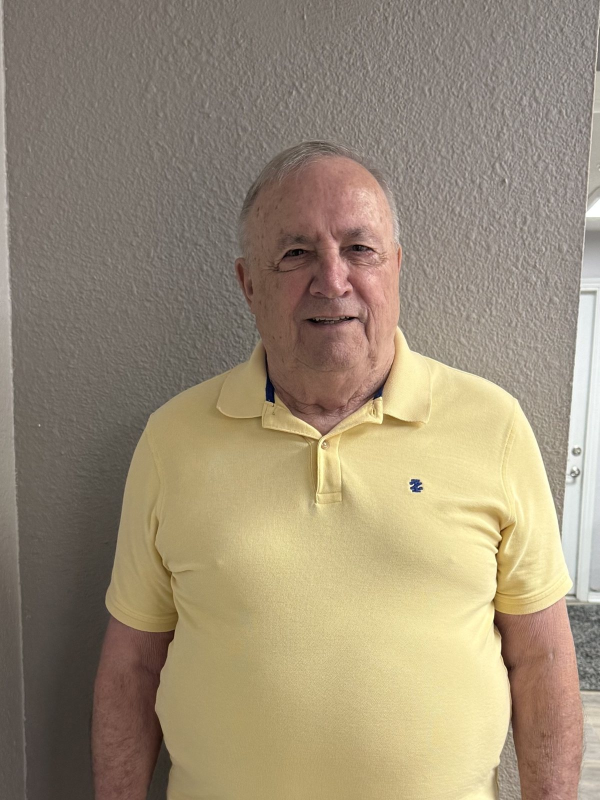

Albert Condon
President / Owner
Albert founded Condon Fire & Safety in 1992 with a straightforward goal — give Indianapolis commercial properties reliable fire protection they could count on. More than three decades later, he still leads the company with the same hands-on commitment to quality service and code compliance that built its reputation.